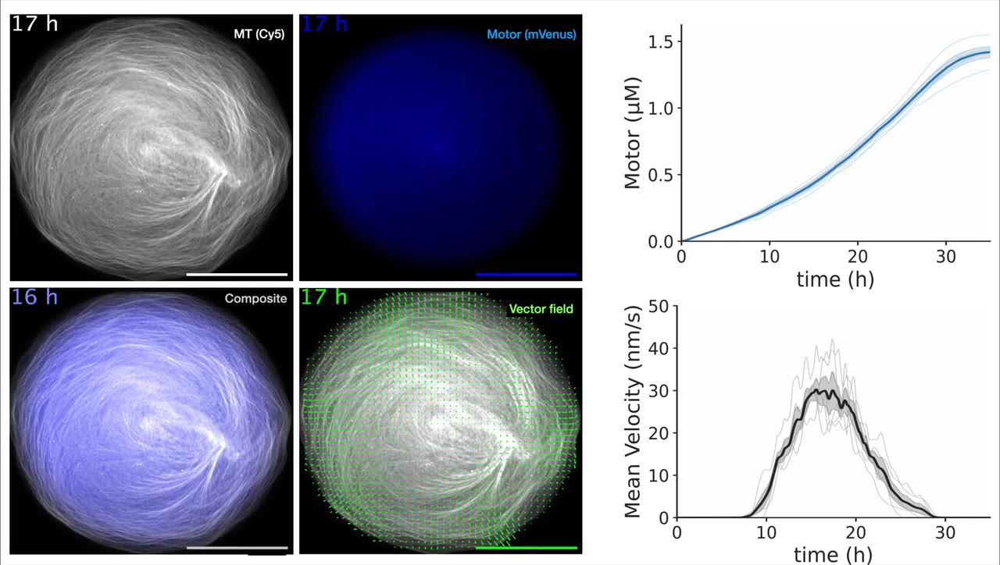

Annotation stops at sequence.
It does not reveal rapid transient motion, sustained activity, or a multiphase reorganization.
Cell-free protein discovery and engineering
I built ActiveDROPS, a cell-free platform that expresses motor proteins directly from DNA, opens uncharacterized sequence space to functional screening, identifies coupled structure–function relationships, and tests those relationships by engineering a new program of collective behavior.

Why this is shown. This movie shows the complete ActiveDROPS measurement, from protein production to network motion.
What to notice. Notice that motor accumulation and microtubule reorganization are measured together as the behavior changes through time.
Conclusion. The experiment connects a DNA sequence directly to a quantitative functional phenotype without purifying each expressed motor individually.
The experimental bottleneck
Genomic databases contain many predicted motor proteins whose collective functions have not been measured. Sequence annotation can identify a kinesin-like protein, but it cannot reveal the program of network motion that protein will generate.
It does not reveal rapid transient motion, sustained activity, or a multiphase reorganization.
Conventional studies ordinarily express and purify each motor before its function can be tested.
ActiveDROPS preserves the link from motor-coding DNA to protein production to time-resolved collective behavior.
Biological context
This overview shows the broad cellular behaviors produced when molecular motors act collectively on cytoskeletal filaments.
Download movieExperimental gap
This overview places ActiveDROPS between purified-component experiments and intact cells: a controlled cell-free system that preserves the link from DNA to collective motion.
Download movieThe platform
ActiveDROPS places motor-coding DNA, bacterial cell-free expression machinery, and a preassembled microtubule network inside water-in-oil droplets. Each motor is produced in the same compartment whose motion is imaged and quantified.
Choose natural motor variants or design recombinant sequences as DNA inputs.
Run the variants through the same cell-free droplet assay and quantify their time-resolved behaviors.
Combine biochemical assays with molecular dynamics simulations of AlphaFold-predicted structures.
Recombine coupled motor regions to generate new proteins and test their collective behaviors.
Platform capacity
Up to 1,152DNA-encoded protein experiments per run
Proof of concept
The proof-of-concept study used repeated measurements and multiple experimental conditions to validate the full sequence-to-behavior workflow while retaining capacity for broader sequence libraries.

Discovery
The study compared 12 kinesin-1 homologs under the same conditions. K401 and Kif3—the two proteins later used as chimera parents—had been characterized previously; the other ten homologs had not.
Some activated rapidly and declined early. Others activated more slowly but sustained motion. ThTr followed a different progression: alignment, rotation, and contraction.
Secondary annotations: Fast-Burst · Slow-Sustained · Multiphase
Why this is shown. The complete motor comparison is shown because the discovery lies in the time course, not in a single endpoint.
What to notice. Notice the differences in activation, persistence, alignment, rotation, and contraction across motors tested under shared conditions.
Conclusion. Homologous motor sequences therefore encode distinct programs of collective self-organization that sequence annotation alone did not reveal.
All three Result 2 movies
Fast-Burst
Several motors reorganize their networks quickly, reach high speeds, and lose activity early.
Download movieSlow-Sustained
Kif5a, K401, and Unc activate later and sustain organized network motion for many hours.
Download movieMolecular basis
To connect collective dynamics to molecular function, I integrated the screening measurements with ATP-dependent microtubule-gliding assays and molecular dynamics simulations performed on AlphaFold-predicted motor–tubulin structures.
Independent biochemical measurements and simulated molecular interactions differentiated the motors along the same major behavioral patterns, identifying sequence-dependent properties that organize the phenotypic landscape.
Why this is shown. The gliding assay provides an independent motor-scale test of the behaviors discovered in droplets.
What to notice. Notice that microtubules move at different speeds across motors and ATP conditions.
Conclusion. Independent motor-scale measurements connect the discovered network programs to sequence-dependent biochemical properties.
Engineering rationale
The contrasting behaviors were associated with different biochemical and structural properties. Those measurements, the predicted structures, and established kinesin mechanochemistry focused the engineering test on three interacting regions. Recombination tested whether changing their coupled relationships could transform properties observed in the parent proteins.
Coordinates nucleotide-dependent changes in the mechanochemical cycle.
Contains the principal interface connecting the motor to its filament.
Includes the neck linker and proximal coiled coil that transmit force.
These experimentally exchangeable regions remain structurally and allosterically coupled throughout the mechanochemical cycle. Their effects are context-dependent, so each architecture functions as an integrated motor.
Explore the complete architecture design in Figure 4Architecture rewritten
I designed and screened the complete 2³ K401/Kif3 architecture set: two parents and six recombinant proteins. One chimera, C/SFS in the figure and movie, placed the Kif3-derived microtubule-binding region within K401-derived ATP-processing and force-transmitting regions.
SFS activated rapidly like Kif3 but sustained motion like K401, producing a kinetic and collective self-organization profile absent from either parent.
Why this is shown. This parent-and-chimera comparison is the visual climax because it directly tests the inferred structure–function relationships.
What to notice. Notice that C/SFS activates on Kif3’s rapid timescale but remains active like K401.
Conclusion. Rewriting the coupled architecture generated a program of network dynamics that neither parent produced.
This result asks how regulation changes the behavior available to one unchanged motor. As ThTr accumulates, its network progresses from alignment to rotation and then contraction.
Changing the supplied DNA dose changes motor-expression dynamics and selects how far that existing progression proceeds. The experiment demonstrates gene-dosage control over which organizational state is maintained.
Why this is shown. The movie shows how expression control changes the endpoint of one encoded progression.
What to notice. Notice that lower DNA doses stabilize earlier states while the highest dose permits contraction.
Conclusion. Expression dynamics can select among behaviors available to one sequence without changing its protein architecture.
The conclusion
Protein architecture encodes collective self-organization through biochemical features that act as a coupled system.
ActiveDROPS connects genomic sequence to measured biological behavior without requiring individual motor purification.
The resulting structure–function relationships guide protein engineering and direct experimental tests.
ActiveDROPS provides an experimental route from genomic sequence discovery to mechanism-guided protein engineering.
Publication and collaborators
Division of Biology and Biological Engineering, California Institute of Technology
Department of Applied Physics, California Institute of Technology
Motor–microtubule self-organization: Nédélec et al., 1997, Surrey et al., 2001, Sanchez et al., 2012, Henkin et al., 2014, and Najma et al., 2024.
Cell-free cytoskeletal expression: Garenne et al., 2020 and Godino et al., 2020.
Kinesin chimeras and coupled architecture: Adio et al., 2009 and Scarborough et al., 2019.
{kind=link}
{kind=link}
{kind=link}
{kind=link}